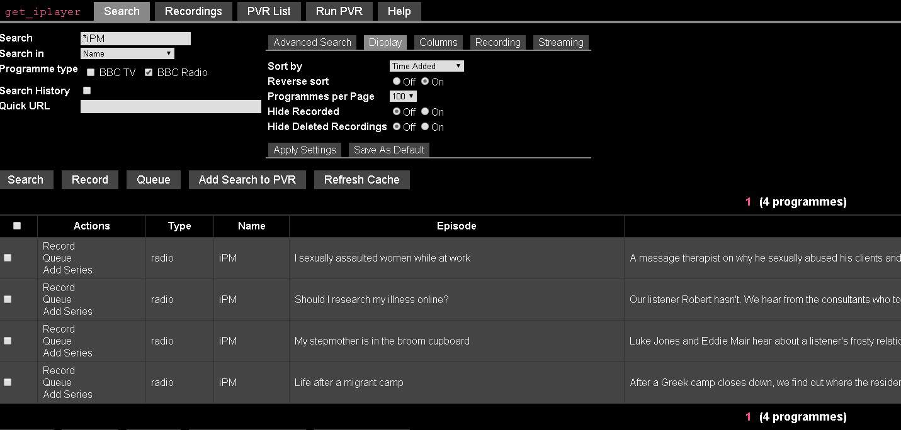

(v3.07 - Win7 ultimate 64bit)
I only do radio downloads, have never tried TV.
Web interface search problem, is this typical?
I used to use the WebPVR function for recording series, and used the CLi for single programmes, but ever since the advent of cache refresh by webscraping, my WebPVR searches are only finding maybe 1/3 of the programmes I search for. Am I doing something wrong, or is that typical? I've tried cache rebuilds, etc, but it has no effect.
As an example, can anyone find "iPM" on R4 via the web interface? I understand the limitations of webscraping, and if my experiences are just how it is then that's fine and I'll live with it.
Verbose display of new programmes on cache refresh
Due to the above, I'm really missing the verbose display of new listings on cache refresh that used to appear in the web interface. I've found the command that get's the CLi to do a verbose refresh, but it has no effect on the Web interfaces's behaviour, and I haven't the knowledge or wit to work out what I'm doing wrong. Is there a way to get the Web's cache refresh display to behave as it used to?
Programme Synopsis detailed info
Sometime around the release of v3.0.x downloaded radio programmes stopped getting the full programme info that (on Windows) appears under:
Properties -> Details -> Comments (for each individual programme.)
Currently I get approx. 28 characters, and it cheerfully stops halfway through the last word.
I understand from Meic that there are several different Synopses included with each programme, and that GiP refers to them as:
descshort, descmedium and desclong.
Once again, stupidity or incompetence has prevented me from finding a solution within the help pages...
This is causing me quite a lot of trouble, is there a fix? Ideally I'd love for GiP to capture and include DescLong with every download, both those captured with WebPVR & via CLi.
(When I go to clear "listened to" stuff from the MP3 player, if I don't recognise the title I now have to listen to a bit of the programme again whereas I used just to be able to glance at the précis under "Comments," which was much quicker.)
Thanks in advance for any help that anyone can offer, and thanks especially to the creators of GiP, it makes a solitary working life bearable.
ed.
(08-12-2017, 03:40 PM)(v3.07 - Win7 ultimate 64bit)
I only do radio downloads, have never tried TV.
Web interface search problem, is this typical?
I used to use the WebPVR function for recording series, and used the CLi for single programmes, but ever since the advent of cache refresh by webscraping, my WebPVR searches are only finding maybe 1/3 of the programmes I search for. Am I doing something wrong, or is that typical? I've tried cache rebuilds, etc, but it has no effect.
As an example, can anyone find "iPM" on R4 via the web interface? I understand the limitations of webscraping, and if my experiences are just how it is then that's fine and I'll live with it.

I can see 4 iPM episodes.
Thanks for that. I just tried again, and all it returns for me is an episode of
"Short Works: The World of Somerset Maugham: Series 3"
It does imply that it's a local problem though. Hopefully if anyone can suggest a fix it'll resolve the general lack of success that I have with Web interface searches rather than just iPM...
I hit the refresh cache button before searching, which I understand might actually make things worse due to the vagaries of webscraping, but it has not shown me a single episode since the problem arose with v3.0.
I can still download them with CLi.
Thanks again,
ed.
Ican see 6 episodes of iPM after Cache Refresh using the Web PVR. Must be something in your set up.
(08-12-2017, 03:40 PM)I used to use the WebPVR function for recording series, and used the CLi for single programmes, but ever since the advent of cache refresh by webscraping, my WebPVR searches are only finding maybe 1/3 of the programmes I search for.
1/3 is meaningless unless we know what you are searching for and how you have configured get_iplayer.
Follow our instructions to provide a full report so we can see what is happening on your system. Use iPM for your test case.
(08-12-2017, 03:40 PM)As an example, can anyone find "iPM" on R4 via the web interface? I understand the limitations of webscraping, and if my experiences are just how it is then that's fine and I'll live with it.
Web scraping is irrelevant here. Don't believe everything you read. Other users have already demonstrated that iPM episodes can be located without difficulty.
(08-12-2017, 03:40 PM)Is there a way to get the Web's cache refresh display to behave as it used to?
Asked and answered:
https://forums.squarepenguin.co.uk/threa...ml#pid7008
(08-12-2017, 03:40 PM)Properties -> Details -> Comments (for each individual programme.)
Currently I get approx. 28 characters, and it cheerfully stops halfway through the last word.
I strongly suspect you are looking at the properties of an MP3 file that you converted yourself from get_iplayer
output. get_iplayer doesn't produce MP3 files and any converted files you produce are not supported. It is likely that the full comment text is in the file, but whether or not you can see it depends on the software or hardware you use to view file properties, as well as how you converted the file. The comment field is handled oddly by Windows Explorer, so I suggest you post a query in the appropriate off-topic forum (
https://forums.squarepenguin.co.uk/forum-24.html) and perhaps someone else will explain in more detail.
(08-12-2017, 04:56 PM)Thanks for that. I just tried again, and all it returns for me is an episode of
"Short Works: The World of Somerset Maugham: Series 3"
That should suggest to you that something may be wrong with your configuration. The string "ipm" does not appear anywhere in that programme name.
((v3.07 - Win7 ultimate 64bit - IE11 v11.0.48)
Thankyou for that, your alternative way of viewing newly updated programmes will be better for me, especially if I can resolve the problem of WebPVR not finding things in searches.
(The simple "inline"display of what had been added during a refresh was only wanted so that I could see at a glance if it hadn't seen a particular programme, so as not to waste my time searching for that programme manually to add it as a series record.)
Search string "get_iplayer --type=radio iPM" produces the attached log file.
(Maybe I should say in the meantime that in the case of iPM via WebPVR, I'm searching for it manually using the text "iPM" exactly as it appears there (but without quotes), with no additional symbols of any kind, in order to cast the net as wide as possible.)
I usually have the search restricted to Radio only, and channels containing "BBC Radio 6 Music,Radio 4 FM,Radio 4 extra" again exactly as it appears there, and am searching in Name + Episode + Desc. (The spurious Somerset Maugham programme contained the word "shIPMates" in it's description.)
(For some reason, if I have R6 anywhere but at the front of the "Channels" list every R6 search will fail.)
Carrying out the "iPM" search with the Radio or Channels restrictions deleted makes no difference, even searching for a specific iPM episode via it's PID doesn't work in WebPVR, but works fine under CLi. That is why I asked if anyone else could see it, as there's no point in my wanting to fix something that can't be fixed.
Should I be concerned about "Rogue" in the Debug section of the log.txt?
(The second log file is the result of the following search string:
get_iplayer --type=radio ".*"
It's results also contain no reference to iPM, & it also contains no R1 or R2 programmes, despite my having deleted all channel search limits both via "prefs-del" under CLi and by clearing them and "apply -> save default" under WebPVR.)
For the record, I just applied:
get_iplayer --prefs-clear
and ran the iPM search again, still no sign of iPM.
(As regards MP3 output, you are of course correct, the data is usually complete in the converted MP3 but Win Explorer has started to truncate it's "comments" display to 28 characters. Smells of ID3v1.1 to me, but nothing helpful online that I can find, or at least recognise as helpful.)
Thanks again for the help already given, and in advance for anything else uou can offer.
ed.
Thanks for the logs, thought they don't quite make sense. There is no channel filter used in either search, so you're not performing the equivalent of what you claim to be doing in the Web PVR. However, "log full search.txt" is illustrative. That lists the entire contents of your radio cache. So, what station is conspicuous by its absence in the listing? You're not going to find iPM or any other Radio 4 programme in a search if you don't index them. The small number of programmes and the presence of only programmes from R6 and R4X in your cache suggest that you are populating your cache with --refresh-include="BBC Radio 6 Music,Radio 4 FM,Radio 4 extra" regardless of whether or not you are actually using a channel filter when searching. That will fail to index Radio 4 programmes because there is no "Radio 4 FM". It's just "Radio 4". Even if you had a full cache, using --channel="BBC Radio 6 Music,Radio 4 FM,Radio 4 extra" to filter search results would fail for the same reason.
Mediapenguin:
I think that that is the new normal.
I have my refresh restricted to R4, R4e & R6m, and it get's refreshed most days, so I see much smaller numbers, but otherwise it's the same.
As suggested by Dinky, if you want to see a full list of everything that was added to the cache on that refresh (but with 1400+ items I doubt that you do) then go to the search page of WebPVR, enter ".*" (without the quotes) in the search window and "1" in the "Added since (hours)" box, and hit search. If you do try it you can filter the results using the other search option boxes to make the numbers more manageable.
Dinky.
Hmm, you're right of course, again. Hard to believe that I'd not noticed that it was all the R4 stuff that was missing rather than just random programmes as it seemed.
How to fix? Un-install / re-install?
I've just deleted the faulty, and added the corrected search restriction in the CLi as follows:
get_iplayer --prefs-del --refresh-include="BBC Radio 6 Music,BBC Radio 4 FM,BBC Radio 4 Extra"
get_iplayer --prefs-add --refresh-include="BBC Radio 6 Music,BBC Radio 4,BBC Radio 4 Extra"
and edited the "Channels containing" entry similarly.
...and refreshed the cache from within WebPVR, (having done it only 20 mins ago when responding to MediaPenguin's question), and it found 115 new programmes, most of which were R4, so we're getting somewhere. 100-odd programmes doesn't seem enough for 7 days of missing R4 data though? Also note that there is still no iPM, most recently broadcast 4 days ago.
(As a default I do have my searches and refreshes (same thing?) restricted to R4, R4e & R6m, but before creating the log files I had attempted to turn those restrictions off by both deleting them from WebPVR and by applying "get_iplayer --prefs-clear" from the CLi. Clearly that didn't work? "--prefs-show" confirmed at the time that there were no prefs stored.)
(I used "BBC Radio 4 FM" rather than "BBC Radio 4" as that is what is listed as the correct station name in the user instructions:
https://github.com/get-iplayer/get_iplay...i/channels
but I note that in an old backup copy of my notes on setting up GiP it lists "BBC Radio 4" so I suspect that I've changed it having read the channels list above and not noticed that change in behaviour soon enough to connect the two. D'oh, etc.)
Thanks again.
ed.
(13-12-2017, 03:18 PM)get_iplayer --prefs-del --refresh-include="BBC Radio 6 Music,BBC Radio 4 FM,BBC Radio 4 Extra"
get_iplayer --prefs-add --refresh-include="BBC Radio 6 Music,BBC Radio 4,BBC Radio 4 Extra"
and edited the "Channels containing" entry similarly.
No need to use "Channels containing" or
--channel since you'll never have other channels indexed.
(13-12-2017, 03:18 PM)somewhere. 100-odd programmes doesn't seem enough for 7 days of missing R4 data though? Also note that there is still no iPM, most recently broadcast 4 days ago.
Rebuild the cache to backfill entries from prior calendar weeks.
(13-12-2017, 03:18 PM)(I used "BBC Radio 4 FM" rather than "BBC Radio 4" as that is what is listed as the correct station name in the user instructions:
https://github.com/get-iplayer/get_iplay...i/channels
That's not really what that list is for. Channel variants are merged when indexing. I'll add some sort of warning to that page.
All now working, Thankyou again for your time and trouble Dinky, and to those who replied with iPM availability info.
As an aside, in the alphabetical listing of my cache's contents it lists iPM at the end, after "Yesterday in Parliament" presumably due to the lower-case "i"? It's not a problem now that I'm aware of it, but if there's a simple fix it'd be nice to have.
For the benefit of anyone stumbling across this thread in the future, I did not have to un-install / re-install to persuade my Cache Refresh to behave nicely and stop using the incorrect filter I'd managed to apply (BBC Radio 4 FM.) After a couple of refreshes, a second " --prefs-del" under CLi and a cache Rebuild (in my case as a radio only user: get_iplayer --cache-rebuild --type=radio) normality was restored.
{kind=link}